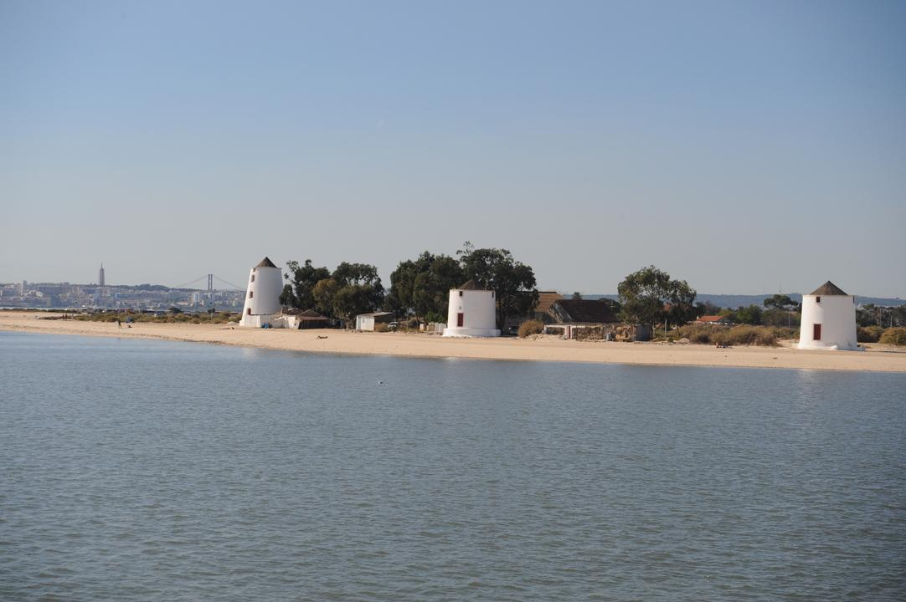
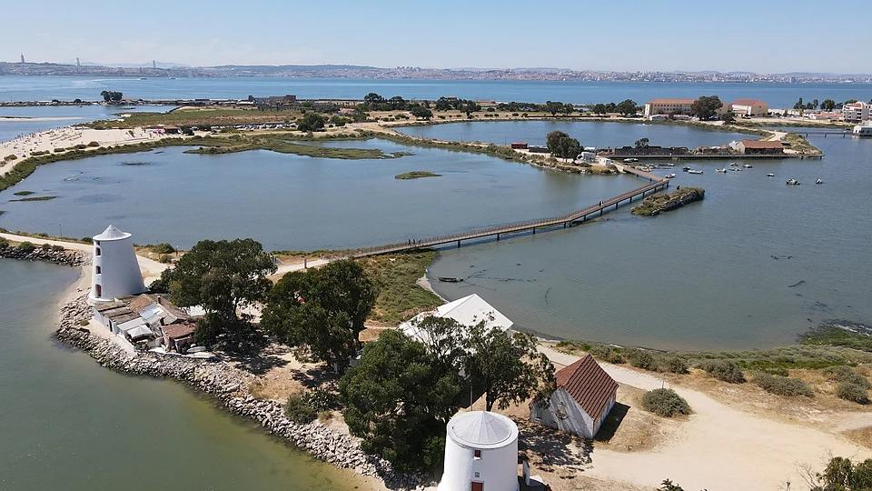
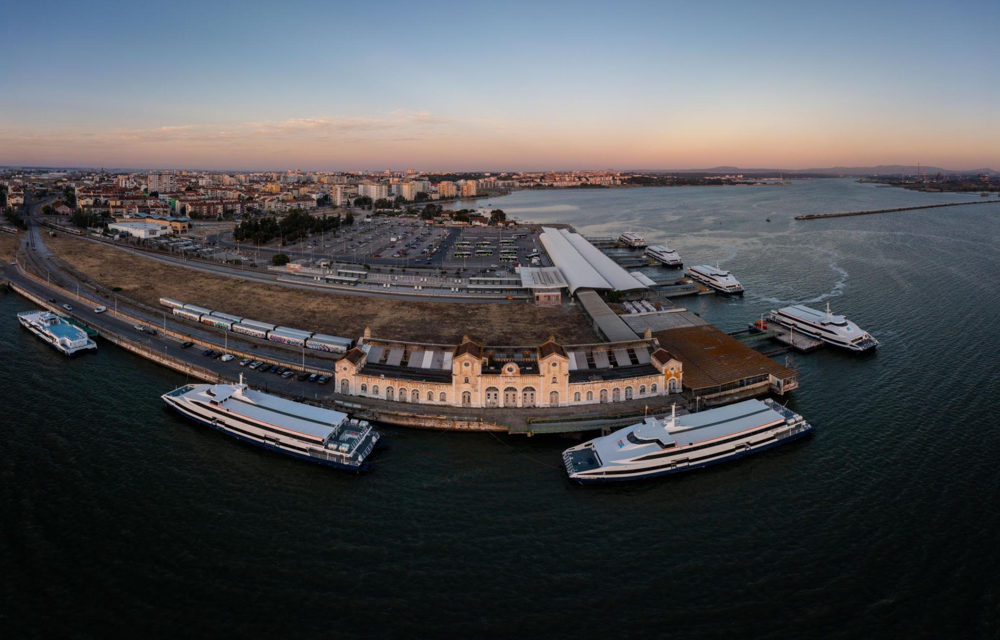

Multimédia
Nesta página encontra conteúdos multimédia.
Fotografias






A rivalidade Fabril-Barreirense
O GD Fabril e o FC Barreirense são dois clubes históricos do Barreiro. A rivalidade futebolística entre os dois faz parte da tradição desportiva da cidade.
Vídeo
Poesia
No Barreiro nasce o dia,
Com o Tejo a espelhar a luz.
Alburrica guarda o vento,
Cada moinho o tempo conduz.
Entre fábricas e caminhos,
Há histórias para contar.
Fabril e Barreirense em campo,
Fazem a cidade vibrar.